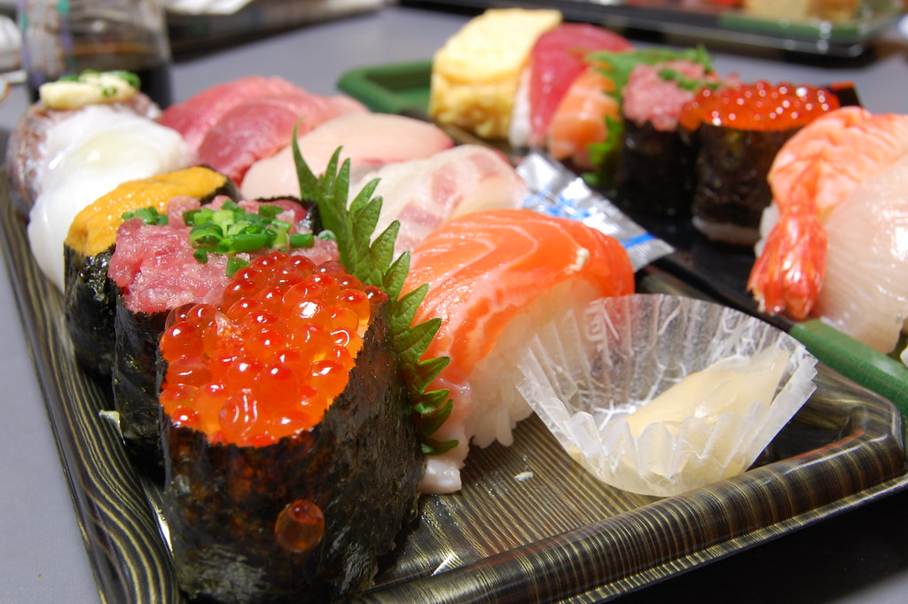
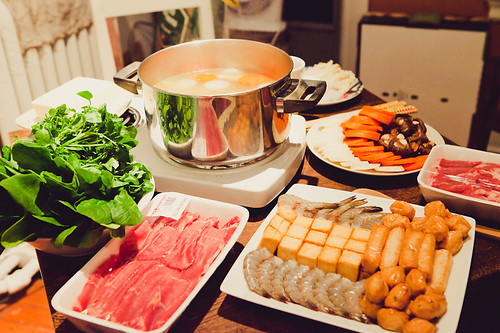

Sushi
Image: "sushi form department store" by kimishowota at https://www.flickr.com/photos/22598122@N03/3068166306, CC BY-SA 2.0
I think Japanese cuisine is good in general, but sushi has been a top favorite of mine. I've grown to love sushi for its texture and its aesthetic looks. Although I've tried to make sushi a few times, none of my attempts have fared very well, either because the ingredients I used weren't fresh enough or because I couldn't quite master the sushi-rolling techniques using the bamboo sheet. In Madison, some of my favorite places to get Sushi are RED, Tavernakaya, and Sushi Express.
Hot Pot
Image: "hot pot!" by Gabriel Li // StudioGabe at https://www.flickr.com/photos/26042288@N00/4343649605, CC BY-NC-ND 2.0.
Hot pot or 火锅 is a Chinese cooking method, prepared with a simmering pot of soup stock at the dining table, containing a variety of East Asian foodstuffs and ingredients. I love hot pot because it's not only delicious, but also provides a great opportunity for friends and family to bond over a meal. Whenever I get together with friends and can't think of what to eat, hot pot is always our #1 choice. Another great advantage of hot pot is that it's super convenient to make, requiring almost no cooking skills whatsoever. Double 10 Mini Hot Pot is my favorite hot pot restaurant in Madison.